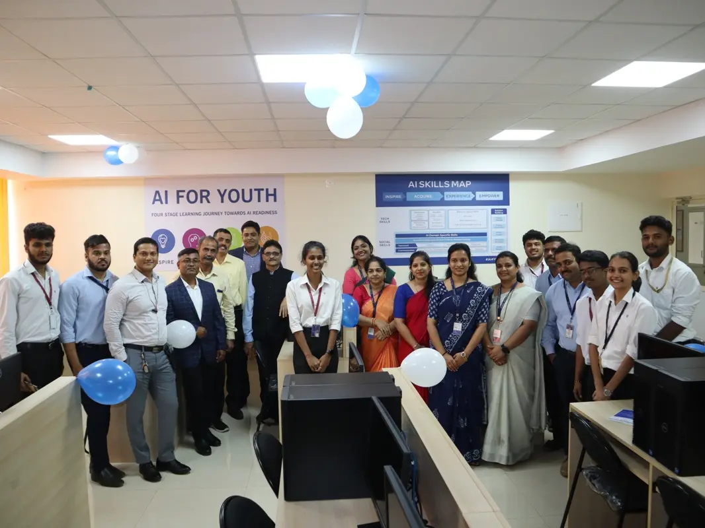

Machine Learning is one of the fastest-growing fields in the technical sector. Enormous modern Industries require the expertise of skilled Artificial Intelligence professionals to expand the scope of Artificial Intelligence into many sectors, including healthcare, transport, security, gaming, voice recognition technologies, smart systems , finance, promotional network development, customer support, prediction and analytics, search engines, product recommendations, fraud detection and many more. Artificial Intelligence has found a very special place in people’s homes as Smart Home Assistants. Computer Engineers and Scientists are striving relentlessly to impart intelligent behaviour in the machines making them think and respond to real-time situations
Vision
Excellence in artifical intelligence and machine learning engineering through a strong research and teaching environment that addresses the emerging global challenges and market demands
Mission
The Department of aiml is committed to
Provide outstanding education and research training to the students for their productive careers in industry, academia and government
Provide a learning environment that promotes excellence and innovation, ethical practice and responsibility towards society
Prepare the students to practice their professions competently to meet the ever-changing needs of society and to continue learning their discipline, allowing them to move into other related fields
Promote active learning, critical thinking, and engineering judgment coupled with business and entrepreneurial skills